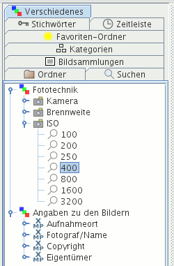

Im Kartenreiter Verschiedenes werden ausgewählte Metadaten angezeigt, die nicht in den anderen Kartenreitern vorkommen. Dieser könnte zukünftig erweitert werden.
Unter Fototechnik stehen Daten, die Ihre Kameras in die Bilder schrieben.
Voraussetzung: Die Bilder wurden eingelesen in die Datenbank und enthalten EXIF-Metadaten, in denen die einzelnen Attribute stehen, die folgend aufgelistet werden:
Unter dem Symbol Kamera sehen Sie die verschiedenen Kameras, die in der Datenbank gespeichert sind. Klicken Sie auf ein Kamerasymbol, werden alle Bilder angezeigt, die Sie mit dieser Kamera fotografierten.
Unter dem Symbol Brennweite sehen Sie die verschiedenen Brennweiten, die in der Datenbank gespeichert sind. Klicken Sie auf ein Brennweitensymbol, werden alle Bilder angezeigt, die Sie mit dieser Brennweite fotografierten.
Unter dem Symbol ISO sehen Sie die verschiedenen ISO-Werte, die in der Datenbank gespeichert sind. Klicken Sie auf ein ISO-Symbol, werden alle Bilder angezeigt, die Sie mit dieser ISO-Einstellung fotografierten.

Es gibt kein Kontextmenü für diesen Kartenreiter.